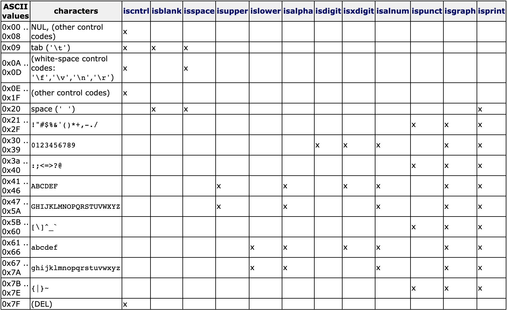

前言
最近用C语言的一些标准库发现也蛮好用，用起来也很方便，性能上也很棒。由于之前一直使用Cpp的标准库，但是有时候怕有些场合不支持Cpp的一些新特性，导致反复修改数据结构浪费很多时间。同时发现有些考试规定了用C语言，最后决定还是系统了解一下C的标准库，以后在不牺牲太大方便程度下尽量用C语言写题目。
cctype库是用来分类和转换单独的字符的函数库，对于出现处理字符串的问题能起到相当大的作用。该库总共12个可用函数。所有函数都是is开头，说明都是判断类的函数。
1. isalnum()
参数：int c
返回值：int
在C语言中，char的技术实现是整数，所以参数的类型是整数，这并不影响把一个char传入函数后的处理。
这个函数是用来判断参数字符是不是数字或者字母（大写和小写都算），如果是，就会返回非零值，如果不是，就返回零。如果这个函数是返回true（非零值），那么isalpha()或者isdigit()其中有一个也会返回true值。
2. isalpha()
参数：int c
返回值：int
这个函数用于判断参数字符是不是一个ASCII中的字母，如果是的话，在isupper()或者islower()中必有一个是返回true值。
3. isblank()
参数：int c
返回值：int
特别要注意的是这是C99或Cpp11的标准中的函数。这个函数用来判断是否是空白字符（要区别于空字符)，有两个字符会返回true值，空格字符和Tab（\t)字符都可以。
4. iscntrl()
参数：int c
返回值：int
这个函数是用来判断参数字符是否是一个控制字符。控制字符是那种不会在屏幕上打印出来的字符，比如0x00到0x08的字符，Tab字符（\t)，0x0A到0x0D的字符（\f, \v, \n, \r），以及0x0E到0x1F的字符，最后是0x7F（DEL）字符。如果是上述控制字符，就会返回true值。
5. isdigit()
参数：int c
返回值：int
这个函数用来判断参数字符是否是一个十进制数字，即从0到9的数字。如过是上述数字就返回true值。
6. isgraph()
参数：int c
返回值：int
这个函数用来判断参数字符是否是会在屏幕上绘制可视化输出的字符，是除了控制字符（iscntrl()函数判断返回true值）和空格字符外的所有字符，后面会提到isprint()函数，两者唯一的不同是，如果参数是空格字符，isgraph()会返回非true值，而isprint()会返回true值。
7. islower()
参数：int c
返回值：int
这个函数是用来判断参数字符是否是小写的字母，即从a到z（0x61到0x7A）。如果是上述字符，就返回true值。
8. isupper()
参数：int c
返回值：int
这个函数是用来判断参数字符是否是大写的字母，即从A到Z（0x41到0x5A）。如果是上述字符，就返回true值。
9. isprint()
参数：int c
返回值：int
这个函数是用来判断参数字符是否是可打印的字符，是完全相反于iscntrl()函数的（虽然有点多余，但在可读性上面还是更好）。像之前所提到的，与isgraph()函数唯一不同的就是空格字符的对待，这个函数会返回true值（因为一个空格在屏幕上也会打印出来），而isgraph()函数不会返回true值。
10. ispunct()
参数：int c
返回值：int
这个函数用来判断参数字符是否是一个标点（punctuation）字符，而这个里面的字符范围是，在isgraph()函数的范围内，但是排除在isalnum()函数之外的所有字符，即所有可视字符中除了字母和数字的所有字符。
11. isspace()
参数：int c
返回值：int
这个函数用来判断参数字符是否是white-space字符，它包含了isblank()判断的空格字符和Tab字符，同时还有另外四个控制字符（\n, \v, \f, \r）。如果是上述六个字符，就返回true值。
12. isxdigit()
参数：int c
返回值：int
这个函数是用来判别是否是十六进制的表示字符，包括0到9，a到e，A到E。如果是上述字符就返回true值。
返回真值的范围图
引用自http://www.cplusplus.com/reference/cctype/
（x表示返回真值的对应字符）

后记
严格来讲每个函数都可以用直接的不等式判断来实现，但是使用这些函数可以增加代码的可读性，已经减少出错的可能性，建议以后单独处理字符的时候使用这个函数库。